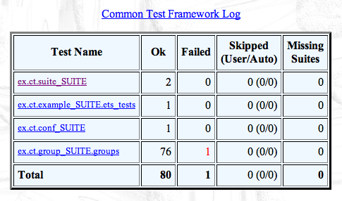

groups() ->
[{group1,
[shuffle],
[test1a,
{group2,[],[test2a,test2b]},
test1b]},
{group3,[],[{group,group4},
{group,group5}]},
{group4,
[parallel],
[test4a,test4b]},
{group5,
[sequence],
[test5a,test5b,test5c]}].
Common Test
Erlang Solutions Ltd.
Common Test
What is Common Test
Common Test Cases
Testing With State
Test Groups
Test Suites
Configuration for Tests
Test Specifications
Large Scale Testing
What is Common Test
Black-box testing tool for servers through Erlang RPC, SSH, Telnet, FTP, etc. supporting many concurrent connections
White-box testing framework for Erlang/OTP applications
Supports distributed testing with centralised control and logging
Support for large scale testing
Common Test Cases
- Test root
Contains one or more test object directories
- Test object directories
Contains one or more test suites
- Test suite
Erlang module with a name ending in _SUITE, containing test cases. Each suite has an optional mod_SUITE_data/ directory for files needed when running tests
- Test case
Erlang function that either succeeds or throws an exception.
Common Test Cases
A test suite must use -include_lib("common_test/include/ct.hrl")
The module must export a function all/0 that returns a list of test names
Test functions take a configuration variable as an argument
The configuration’s values can be fetched with the ?config(Key, Config) macro.
By default, the Config has data_dir and priv_dir variables
Common Test Cases: example
Common Test Cases: example
Testing With State
More complex test cases might require initialisation and termination
The functions init_per_testcase(Name, Config) and end_per_testcase(Name, Config) can be exported to do it
These functions can pattern match on the test’s name and modify the configuration with the required state.
Test suites and test cases
Testing With State
Test Groups
Tests might share similar configurations and need similar execution environments; test groups are the solution
Groups can have their tests ran sequentially, in parallel or in random order
Tests can be ran until one or many failures are found, or until one or all tests succeed
Groups can be nested
Test Groups: declaration
Groups are declared in a groups/0 function
3-Tuples of the form
{Name, Properties, GroupsAndTests}define groupsProperties include
parallel,sequence,shuffle,{shuffle, Seed}and{Repeat, N}, where Repeat isrepeat_until_<all_ok| all_fail | any_ok |any_fail>
Test Groups: properties
- parallel
Tests are ran in parallel
- shuffle, {shuffle, {Int, Int, Int}}
Tests are executed in random order. The seed can be given explicitly to repeat failing cases.
- sequence
Tests that depends on each other are ran in order. If a test fails, the others are skipped
- {repeat_until_all|any_ok|fail, Int | forever}
Orders Common Test to repeat execution in the group Int times, or until any, or all, cases fail or succeed
Test Groups
Groups can be initialised with the mandatory functions init_per_group(GroupName, Config) and end_per_group(GroupName, Config), which are ran in a distinct process before and after each group. Exporting them is mandatory to control the test group properties.
The init_per_test/2 and end_per_test/2 functions will still be called if defined
Groups are to be included in the all/0 function with the form {group, GroupName} along with regular tests, if any
Test Groups
Test Groups: example
Test Groups: example
Test Groups: example
Test Groups: example
same_split(Config) ->
TabId = ?config(table, Config),
ets:insert(TabId, {alison, 10}),
ets:insert(TabId, {alison, 32}),
ets:insert(TabId, {alison, 22}),
[{alison, 22}] = ets:lookup(TabId, alison).
diff(Config) ->
TabId = ?config(table, Config),
ets:insert(TabId, [{mark,44}, {jim,25}, {fred,13}]),
[{mark, 44}] = ets:lookup(TabId, mark).
Test Groups: results
Test Suites
Test Suites
init_per_suite(Conf) ->
[{key, Val}|Conf].
end_per_suite(Conf) ->
ok.
suite() ->
[{timetrap, {seconds,10}},
{userdata, some_atom},
{require, id},
{default_config,id,"jim"}].
The functions init_per_suite(Conf) and end_per_suite(Conf) allow to initialise elements common to all tests of a suite
The info function
suite/0allows to give metadata about a test suite.
Test Suites: info function
- {timetrap, {Unit, Int}}
Gives a time limit for the whole suite to be ran. The Unit can be hours, minutes or seconds. Without any unit, the time is in milliseconds. The atom infinity is accepted.
- {userdata, Data}
Arbitrary data that should be accessible to all test cases. Can be retrieved with ct:userdata(Directory, ?MODULE).
- {require, Var}
A variable that must be present in a suite’s configuration files is declared as required. A default value can be given with {default_config, Var, Value}.
Configuration for Tests
External configuration files allow to store values about the System Under Test (SUT)
It makes it possible to change the configuration values without changing the test suite
Can contain login information, file names, external application names, addresses, etc.
A test case must require a variable before getting it. Use ct:get_config(Var) to get the value.
Configuration for Tests: consult files
{id, "carl"}.
{size, 3}.
{items, [car, moose, food]}.
{ftp_host, [{ftp,"host"},
{username,"My Name"},
{password,"My voice is my passport"}]}.
A configuration file can have the format accepted by file:consult/1
The file can be given to the test suite by using the arguments
-config File1 File2 ... FileNfrom the command lineConfiguration files can also be specified in XML, by using the arguments
-userconfig ct_config_xml File1 File2 ... FileNfrom the command line
Configuration for Tests: info functions
-module(conf_SUITE).
-include_lib("common_test/include/ct.hrl").
-export([all/0]).
-export([my_test/0, my_test/1]).
all() -> [my_test].
my_test() ->
[{require, id},
{require, items}].
The info function my_test/0 tells which variables my_test/1 will need
Test info functions can return the same type of values as suite info functions
No reference to the configuration file is made from within the suite. It is purely external and configurable
Configuration for Tests: results
Test Specifications
A test specification is a sequence of Erlang terms, either in a file or passed to the test server.
Allows to define general test configurations
Expressive way to have tests, groups and/or suites executed in a well-defined order
Allows to specify tests, groups and/or suites to skip
Allows to specify configuration files, logging directories, include paths, etc.
Test Specifications: config syntax
- {include, IncludeDirs}
Tells the compiler where to look for header (.hrl) files. Equivalent to the -include option.
- {config, ConfigFiles}
Automatically loads the configuration file for a test. Equivalent to the -config option.
- {alias, Alias::atom(), Dir}
Allows to use Alias to refer to a directory Dir for the rest of the test specification file.
- {logdir, LogDir}
Specifies where the HTML logs will be created.
Test Specifications: tests syntax
- {suites, Dir, all | Suites}
Takes one or more suites in Dir and runs them.
- {skip_suites, Dir, all | Suites, Comment}
Avoids executing one or more suites in Suites. Marks each of them as SKIPPED in the logs, with Comment as an explanation.
- {groups, Dir, Suite, all | Groups}
Runs the tests inside the Groups in the given suite.
Test Specifications: tests syntax
- {groups, Dir, Suite, Group, {cases, all | Cases}}
Runs the specific test cases in Cases as if they were running in their own group (including group initialisation and termination)
- {cases, Dir, Suite, all | Cases}
Runs Cases from the given suite individually.
- {skip_cases, Dir, Suite, all | Cases, Comment}
Avoids executing one or more test cases. Marks each of them as SKIPPED in the logs, with Comment as an explanation.
Test Specifications: example
Test Specifications: example
Test Specifications: example
Testing ct.group_SUITE.groups: Starting test (with repeated test cases)
- - - - - - - - - - - - - - - - - - - - - - - - - -
group_SUITE:same failed on line 36
Reason: {badmatch,[{alison,25}]}
- - - - - - - - - - - - - - - - - - - - - - - - - -
Testing ct.group_SUITE.groups: *** FAILED *** test case 75
Testing ct.group_SUITE.groups: Stopping repeat operation {repeat_until_any_fail,7}
Testing ct.group_SUITE.groups: TEST COMPLETE, 76 ok, 1 failed of 77 test cases
Updating /Users/ferd/ct/logs/index.html... done
Updating /Users/ferd/ct/logs/all_runs.html... doneTest Specifications: reports

All runs are reported
Test specifications that overlap are merged into a single run
Compiling suites and deciding the order of execution of test cases is fully configurable without modifying the suites themselves
Large Scale Testing
Needs to be able to run tests on many nodes
The nodes might be on different hosts, testing different systems and code
Common Test offers a master test node that can start and connect to test nodes and handle tests from a central configuration
All nodes need to be in the same network and need to use the same file system
Large Scale Testing
Test specifications can be modified to support distributed testing
Add a node name or alias as the second element of pre-existing tuples
The operations specified by that tuple will take place on the node mentioned for it only.
Large Scale tests must be run with ct_master:run(TestSpecFile).
Large Scale Testing: syntax
{node, NodeAlias, Node}.
{init, InitOptions}.
{init, Nodes, InitOptions}.
{include, Nodes, IncludeDirs}.
{config, Nodes, ConfigFiles}.
{logdir, Nodes, LogDir}.
{suites, Nodes, Dir, Suites}.
{skip_suites, Nodes, Dir,
Suites, Comment}.
{groups,Nodes,Dir,Suite,Groups}.
{cases, Nodes,Dir,Suite,Cases}.
{skip_cases, Nodes, Dir, Suite,
Cases, Comment}.
Nodes can be aliased and started with the right specifications
Logging, configuration and include files can be handled on a per-node basis
Commands with Nodes will only be executed on said nodes
More commands exist and are documented in the Common Test user guide.
Large Scale Testing: starting nodes
Nodes can be started with {init, Node, Options}.
Options will be passed to the other node directly.
{username, Username} and {password, Password} can be used to connect to protected hosts with SSH
{startup_functions, [{M,F,A}]} will run each function when the node is started
{monitor_master, Bool} stops the node if the master dies. Defaults to false.
See the documentation for the ct_slave module for more options.
Large Scale Testing: example
Large Scale Testing: example
{suites, node2, root, suite_SUITE}.
{cases, node2, root, suite_SUITE, [my_test,
my_other_test]}.
{cases, node3, root, example_SUITE, ets_tests}.
{cases, node1, root, conf_SUITE, all}.
{groups, node3, root, group_SUITE, [group1, group3]}.
{groups, node3, root, group_SUITE, group2, {cases,
[single]}}.
Large Scale Testing: example
Large Scale Testing: example
=== Starting Tests ===
Tests starting on: ['ct_node3@host', 'ct_node2@host',
'ct_node1@host']
=== Test Info ===
Starting test(s) on 'ct_node3@host'...
...snip...
=== Test Info ===
Test(s) on node 'ct_node1@ferd-macbook.local' finished.
=== TEST RESULTS ===
ct_node2@ferd-macbook.local_____________finished_ok
ct_node1@ferd-macbook.local_____________finished_ok
ct_node3@ferd-macbook.local_____________finished_ok
...snip...
Large Scale Testing: example

Common Test
What is Common Test
Common Test Test Cases
Testing With State
Test Groups
Test Suites
Configuration for Tests
Test Specifications
Large Scale Testing